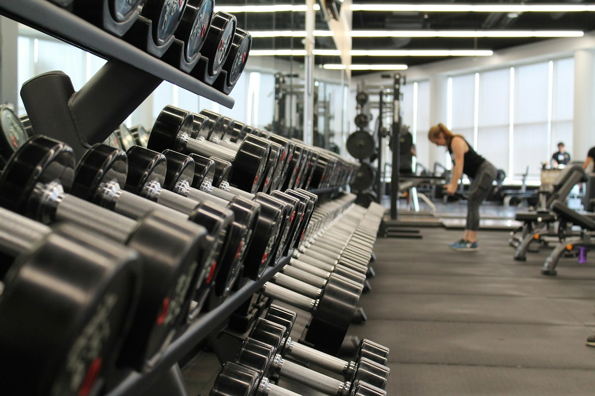
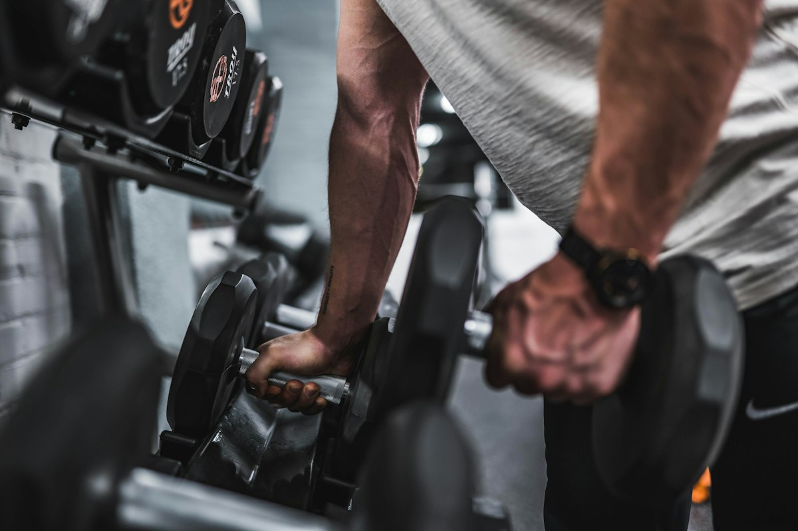
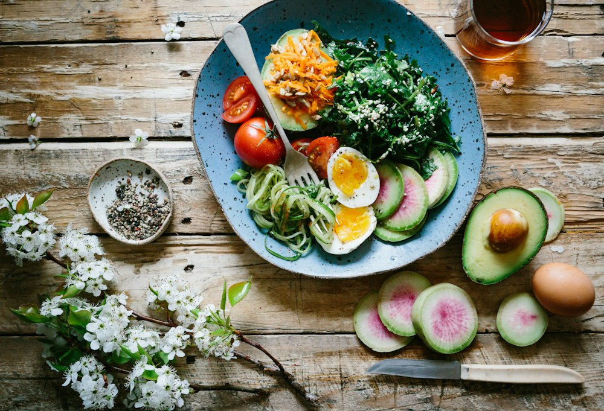
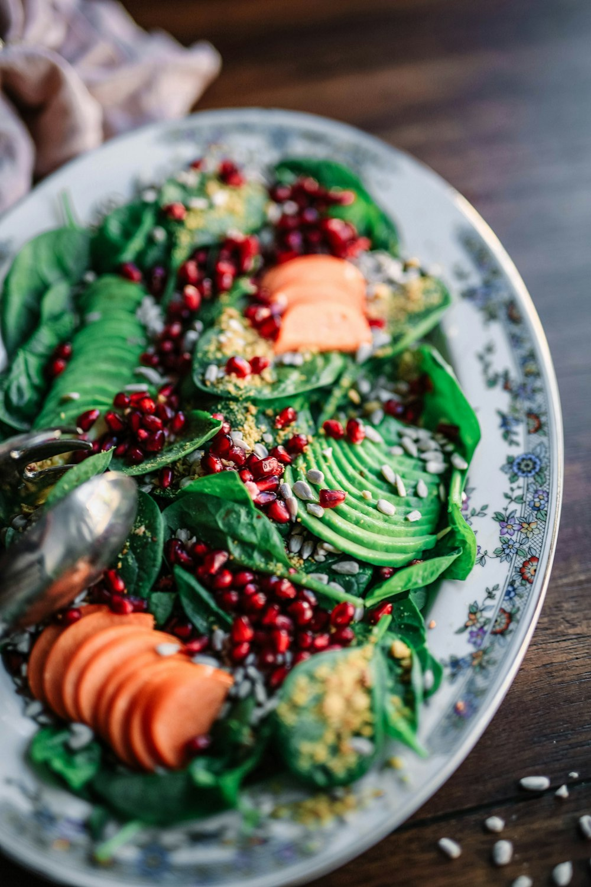
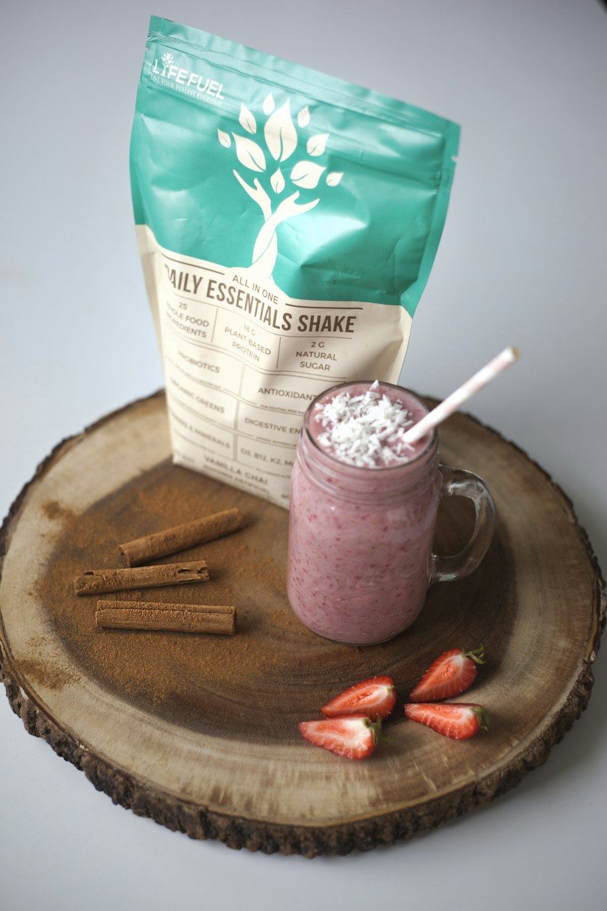
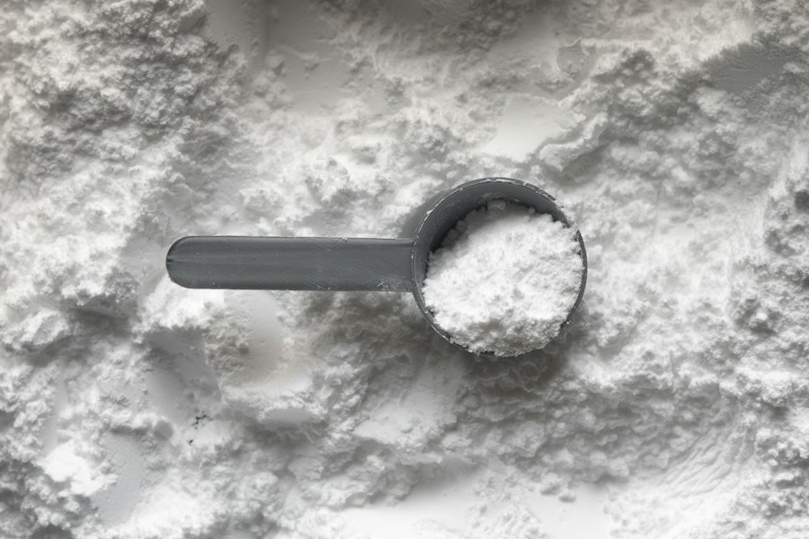
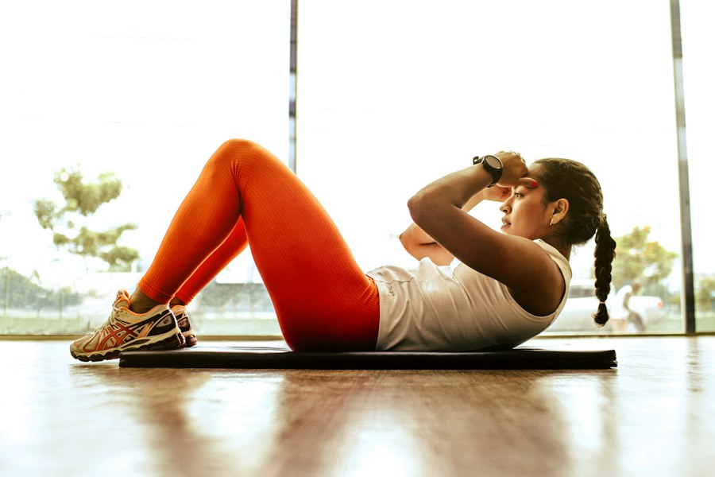

Расти постепенно
Силовые тренировки, регулярная еда и небольшой профицит — без гонки за цифрами на весах.
План набора ↗Понятный гид по залу, питанию и восстановлению — для первого шага и для больших целей.


Не нужно «идеальное тело», чтобы начать. Выбери, что ближе сейчас, и получи безопасный ориентир.
Силовые тренировки, регулярная еда и небольшой профицит — без гонки за цифрами на весах.
План набора ↗Умеренная активность, сытная еда и постепенные изменения устойчивее строгих диет.
План снижения веса ↗Освой движения под присмотром взрослого или тренера. Никаких жёстких диет и «сушки».
Правила для подростков ↗Подстрой план под расписание, опыт и самочувствие. Начни с двух-трёх тренировок в неделю.
План для взрослых ↗Подросткам: вес и форма тела меняются во время роста. Не ставь себе диагноз по взрослым калькуляторам. Обсуди цель с родителем/опекуном, педиатром или квалифицированным тренером.
Сильные мышцы строятся на повторяемых движениях и хорошей технике. Выбери группу — посмотри, чем её нагружать.

Начни с контролируемого движения: жим гантелей или отжимания. Не отбивай вес от груди, держи лопатки стабильно.
Правило новичка: оставляй 2–3 повтора «в запасе». Если техника ломается — уменьши вес. Боль в суставе — сигнал остановиться.
Приседания к стулу, отжимания от стены или опоры, ягодичный мост, тяга рюкзака и планка. Делай 2–3 круга в спокойном темпе, сохраняя чистую технику. Постепенно усложняй движение или добавляй повторения.
Калории дают энергию, белки помогают строить и восстанавливать ткани, жиры важны для здоровья, а углеводы — топливо для движения.
Для снижения веса нужен небольшой дефицит, для набора — небольшой профицит. Не нужны экстремальные ограничения.
Есть в мясе, рыбе, яйцах, молочных продуктах, бобовых, тофу. Распредели источник белка по приёмам пищи.
Орехи, семена, масла, яйца и жирная рыба — часть сбалансированного рациона. Не исключай жиры полностью.
Крупы, картофель, фрукты и хлеб дают энергию. Выбирай разнообразные продукты и добавляй овощи.
Ешь регулярно, добавь к привычной еде питательный перекус и тренируй всё тело. Оценивай прогресс раз в 2–4 недели, а не ежедневно.
Пример: йогурт + овсянка + бананДобавь прогулки, овощи и белок к приёмам пищи. Создай умеренный дефицит, сохрани силовые и сон. Если тревожно вокруг еды — обратись к специалисту.
Пример: тарелка ½ овощи, ¼ белок, ¼ гарнир
Не пропускай еду ради «компенсации». Добавляй овощи, обычные источники белка и воду; выбирай порции, после которых комфортно сыт. Увеличивай ежедневную ходьбу постепенно и спи достаточно. Если взрослому нужен план снижения веса, безопасный темп и рацион лучше обсудить с врачом или диетологом.

Сохраняй регулярные приёмы пищи, добавь перекус вроде йогурта с фруктом, бутерброда или молочного коктейля. Тренируй всё тело и оставляй время на восстановление. Оценивай тенденцию веса за несколько недель. Не получается набрать или вес снижается сам по себе — обратись к врачу. Подросткам не следует самостоятельно считать калории.
Оценка калорий для взрослых — не медицинское назначение. Реальная потребность зависит от активности, здоровья и динамики веса.
10–20 минут лёгкого или умеренного кардио после тренировки — нормальный вариант. Можно делать кардио в отдельный день или просто больше ходить. Оно не «сжигает мышцы» само по себе; ориентируйся на восстановление и цель.
Ни одна добавка не заменит питание, сон и программу. Покупай только продукты с понятным составом и независимой проверкой качества.

01 / СИЛАЛучше всего изученная форма. Может немного улучшить результат в повторных интенсивных усилиях. Не стероид и не обязательная добавка.

02 / БЕЛОКЭто удобная еда в порошке, а не особый «строитель мышц». Помогает добрать белок, если обычной едой не получается.

03 / КАЛОРИИСмесь углеводов и белка для удобного увеличения калорийности рациона. Не гарантирует набор мышц и часто не нужен.
Подросткам не следует самостоятельно принимать спортивные добавки. Обсуди продукт и цель с родителем/опекуном и врачом: качество добавок и индивидуальные противопоказания имеют значение.
Сверь цену за порцию, состав, аллергенность и независимую проверку конкретной партии. Формулы и доступность меняются; название бренда не гарантирует качество.
Например, Optimum Nutrition Micronized Creatine или продукт с маркировкой Creapure®. Ищи один ингредиент — без «секретных смесей».
Optimum Nutrition Gold Standard Whey, Myprotein Impact Whey или Dymatize ISO100 — примеры для сравнения состава, переносимости и стоимости.
Optimum Nutrition Serious Mass и Dymatize Super Mass Gainer — калорийные смеси; сравни сахар, размер порции и состав. Домашний коктейль тоже вариант.
Исторические достижения в пауэрлифтинге и стронгмене. Это разные дисциплины: сравнивай результаты только внутри соответствующих правил и категорий.
Исторический raw-жим, выполненный в 2021 году. Результаты и статус рекорда проверяй по федерации и протоколу.
Исторический рекорд стронгмена, установленный в 2016 году. Это становая тяга в стронгмене, а не результат пауэрлифтинга.
В 2020 году превзошёл результат Холла, подняв 501 кг в становой тяге стронгмена. Историческая отметка, позже были подняты большие веса.
Здесь приведены известные исторические достижения, а не гарантия текущего рекорда. Результаты в пауэрлифтинге нельзя сравнивать напрямую без проверки правил, весовой категории и статуса экипировки.
Рекорды IPF ↗Выбери тему или напиши свой вопрос — помощник подскажет, с чего начать. Это демонстрационный помощник, не врач и не персональный тренер.